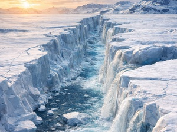
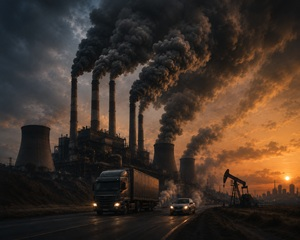
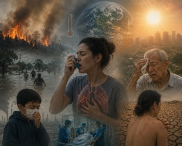

Aumento de temperatura
El deshielo del Ártico es la alarmante disminución de la capa de hielo marino y los glaciares en el Polo Norte.
El Ártico se calienta hasta cuatro veces más rápido que el resto del planeta, alcanzando mínimos históricos de extensión helada. Esto eleva el nivel del mar y altera el clima global.
Causa: La quema de combustibles fósiles y los gases de efecto invernadero han acelerado el calentamiento global, incidiendo en un 90% en la pérdida de masa de hielo.

Quema
La quema de carbón, petróleo y gas natural es la causa principal del cambio climático. Este proceso libera enormes cantidades de dióxido de carbono (\(CO_{2}\)) y otros gases a la atmósfera, los cuales retienen el calor del sol —un fenómeno conocido como el efecto invernadero— y provocan el calentamiento global.
Consecuencias inmediatas: Ocasiona el aumento del nivel del mar, sequías más severas, derretimiento de polos y ondas de calor extremo, además de graves problemas de salud por mala calidad del aire.

Salud: El cambio climático afecta gravemente nuestra salud al alterar los pilares básicos de la vida: la calidad del aire, el agua potable, los alimentos y la vivienda. Provoca desde golpes de calor y enfermedades respiratorias, hasta la expansión de virus transmitidos por mosquitos y graves trastornos de salud mental.
Enfermedades transmitidas por vectores: Las temperaturas más cálidas y las lluvias intensas crean criaderos ideales para mosquitos, multiplicando casos de enfermedades como el dengue, zika y chikungunya.